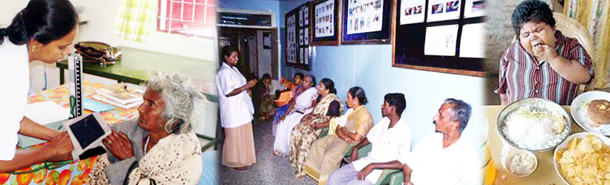
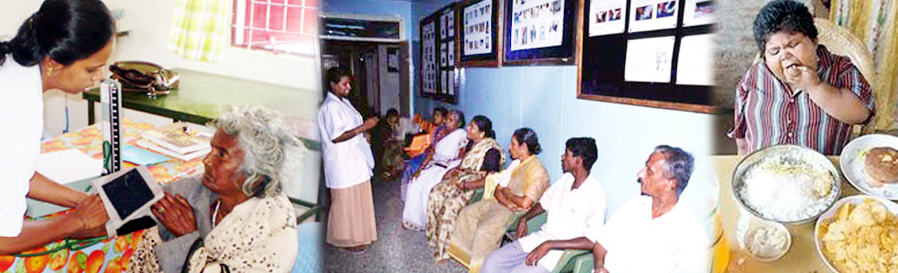

Emergency Care:
Medical Emergency form 20% of Health Care events. Golden Hour in Medical Emergency is the pivotMedical help is to be accessed within this Golden hour to save lives. With today’s effecting treatment protocols, drugs & gadgets the major issue seems to be access to health care within the first one hour of Emergency & Trauma.
This needs an effective communication, Transport system and equipped Emergency care centers both Public & Private to be located within 25 KM in the city and 50 km on the high ways.Uniform Toll free number through out the Nations as ‘108’ with BCLS / ACLS Ambulance with man power, equipments & Drugs will create access to Trauma & Emergency care in the Golden hour & will save precious lives.
When Roads Become killing fields, shouldn’t we act?
The Hindu July 10,2011